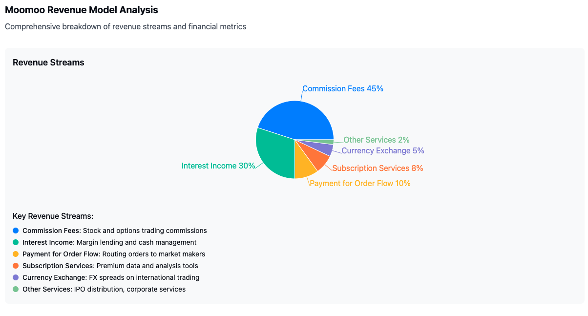
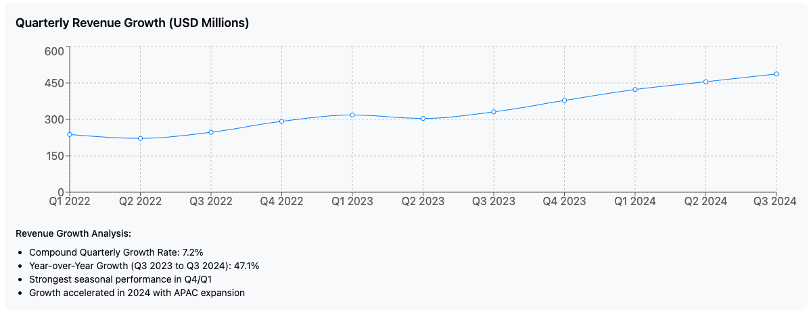
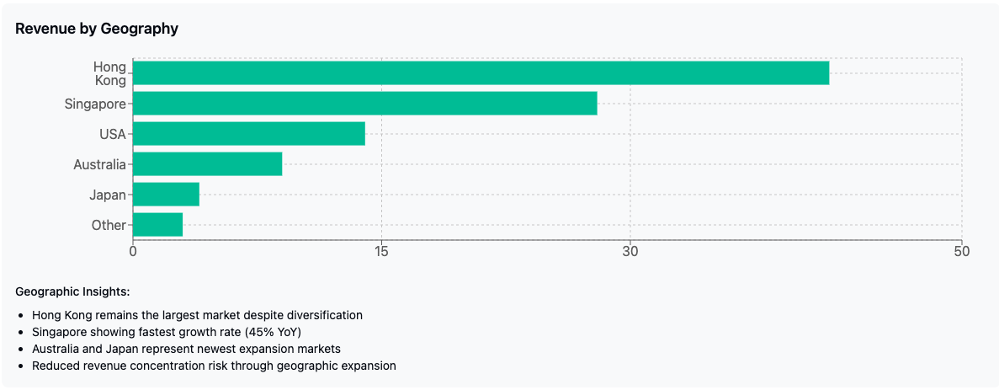

As a financial analyst examining Moomoo’s business model, I’ve identified and visualized the key revenue streams that power the platform’s growth.
Strategic Revenue Evolution
Moomoo’s revenue model is strategically evolving: 1. Reduced Commission Dependency: Gradually decreasing reliance on trading commissions 2. Growing Recurring Revenue: Increasing focus on subscription services and interest income 3. Geographic Diversification: Expanding into new markets to reduce concentration risk 4. Premium Service Upsell: Leveraging technology advantage to create premium offerings 5. Wealth Management Expansion: Beginning to monetize non-trading financial services
This diversified approach has allowed Moomoo to maintain strong growth despite industry-wide pressure on trading commissions, positioning the company for sustainable long-term revenue expansion across the APAC region.
Would you like me to provide more detailed analysis on any specific aspect of Moomoo’s revenue model?

Both Robinhood and Moomoo would experience churn in their user base as already fickle investors get more expectant and move to other platforms while recent and upcoming players compete for the same market segment, further adding pressure to their bottomline. Coincidentally the common strategy for either of them is some or all of the following:
- Reducing dependency on commission income which currently makes up the majority of all revenue streams.
- Growing recurring revenue by increasing the weight or moving to a subscription based model for its clients
- Diversifying markets by expanding into new emergent geographies, preferrably with young demographics hungry to invest
- Investing in innovation & automation to drive down manpower costs
- Offering new products and financial services such as cryptos, wealth management, holding accounts, etc.
- Exploring strategic partnerships with other financial service companies to offer complementary services
When Robinhood reports full-year earnings on Wednesday, it will mark a coming of age for the engine of 2021’s fleeting meme stock mania.
Analysts anticipate fourth-quarter profits of more than double any previous quarter off the back of a blowout period for rivals. The online broker is expected to report its first-ever annual profit, more than three years after it first went public.


After shedding 80 per cent of its market capitalisation in the wake of its IPO, its shares have more than quadrupled over the past year, far outpacing rivals such as Interactive Brokers and Charles Schwab. It now trades 40 per cent above its IPO price, with a market value closing in on $50bn.
“The maturation of Robinhood has coincided with the maturation of the retail investor,” said Patrick Moley, an analyst at Piper Sandler. “They’ve been working on their product road map, so as retail trading has accelerated, they had these . . . pieces in place.”
Robinhood has evolved from an app that sprayed digital confetti when customers made their first trade to one that aims to serve as a broader financial services platform.
Its founder Vlad Tenev has set ambitious goals for the broker’s expansion. “We expect to get to number one in options before 2027, number one in equities before 2029,” he said at the company’s first investor day in December. “This is just one piece of a much larger picture.”
Revenues from trading have not yet recovered to the peak reached during 2021’s meme-stock mania. But since 2022, its earnings have been bolstered by rising interest rates, which have helped it earn interest on its own deposits as well as boosting its cash sweep programme, where it collects fees from customers who earn interest on their unused funds.
Last year, it added futures trading and a desktop app for more serious traders, as well as a credit card with a 2mn-strong wait list under its fee-paying “Gold” service.
“The card is the one that generates a lot of envy and interest around the office,” said Benjamin Budish, an analyst at Barclays who switched to an “overweight” rating on the stock in September.
A Robinhood Gold card currently offers an industry-leading 3 per cent cashback on all purchases, and select clients can apply for a solid gold version.
“We’re not yet seeing it driving a ton of revenues, but that wait-list is a lot of people who can become fee-paying clients,” Budish added. “With that, maybe they become equity clients — they maybe trade options. And then this platform approach starts to make more and more sense.”
For the quarter it is about to report, analysts expect $535mn in transaction-related revenues, according to LSEG data — a number that would finally surpass the meme-mania peak.
By now the primary revenue source would not be stock trading, or even options, hitherto the largest provider of income, but from a surge in crypto trading income from $61mn to $320mn, undoubtedly thanks to Trump’s return to the White House as well as his crypto-friendly statements.
A prospective boom in crypto trading, no doubt thanks to president Trump, among other reasons has been one of the factors underpinning price growth in Robinhood’s shares, even outclimbing that of Coinbase. Shares of Coinbase jumped almost 50%, making it worth $70bn in the market, while shares of Robinhood increased more than 2 times in as many months since the presidential elections in the US.
Although offering only a tenth of the tokens made available by coinbase, Robinhood’s strategy seems to resonate more with the moderate investors who are able to buy options of major Nasdaq companies, trade the latest in trend meme stock, in addition to the most popular crypto assets in the market. “That’s a model that I think is going to be successful for them over the next several years” opined Moley of Piper Sandler.
In addition, Robinhood also acquired the crypto exchange Bitstamp for $200mn, in a deal that would allow it to launch staking service, a practice to enable coin owners to earn a return from verifying other transactions through their holdings. An extra advantage of this acquisition is the in-principle approval for trading in Singapore as well as licenses in Europe Bitstamp carries with it, which allows Robinhood to expand in the EU and APAC in the not-too-distant future.
Robinhood is expected to double down in its crypto assets offerings as well as services, potentially reaping the benefits of crypto regulatory changes from the White House.
Part 3 - Headwinds
Young startups like Robinhood and Moomoo remain relative small fries in the space of trading and brokering where financial muscle and industrial connections are key elements to survive. For example Interactive Brokers, commonly seen as the most direct competitor to both platforms held close to 3 times more assets under custody than Robinhood and purportedly at least 10 times more than Moomoo
In general, retail trading platforms face greater competitive pressure from larger wealth management rivals such as Fidelity, Charles Schwab that have the wherewithal to not only offer a much greater range of investment products and opportunities, but also possess the requisite financial buffer and market mass to withstand higher volatility and black swan events.
This means platform companies have to remain highly nimble and innovative, including putting up ever more volatile and riskier assets, and products in order to retain client interest while attempting to build up the user base and assets under custody to fend off bigger rivals and withstand shocks to the markets
Over the next years, Robinhood’s and Moomoo’s traditional clients, the younger and more impulsive demographic that trades on social media vibes, might “graduate” to more stable portfolios with a longer investment horizon. This has been happening for major platforms where new retail investors there are under 30 are increasingly making up more than those under 40, and are expected to increase 3 fold in the next decade. Ultimately, the trend would stabilize, exibiting a balance of traders opting for conventional and newer platforms. This is however a disadvantage to the up-coming startups that rely on being novel with a sense of rebelliousness and catering to the ever-evolving tastes of the youthful demographic. A fixed and progressively less mobile market segment could be fatal to their user acquisition and uptake numbers. Furthermore, for newborn platforms that rely primarily on funding to finance their operations, a decreasing user base could dampen investor interest and slow their growth to eventual profitability.
Regulatory environment also plays a major role in the expansion of trading platforms. Regulatory and political scrutiny in China from 2021 has caused financial players to experience increased turbulence, from the halted listing plans of Ant Financial to the tightened control of money flow by major banks have put a damper to plans in-country by companies and accelerated their moves to expand overseas. The worsening political landscape on the mainland coupled with a sharply intensifying trade war between China and the US would force these startups to more political neutral regions where the fight over market share and the need to grow user base would only compound.
For Robinhood’s and Moomoo’s continued growth and stock performance, both have chosen to increase the type of product offerings such as factional shares, options, and cryptos - where it has a distinctive advantage among younger investors, as well as seeking growth in emergent markets in APAC where under-30s make up a proportionately greater size of the user base. An additional service that is rapidly garnering attention and greater interest is the potential of cross-border trading and settlement where an investor could invest in foreign assets while opting to settle in the local currency, reducing forex risk by a large extent. This not only opens up more mature markets in Europe and the US to Asian investors, it also allows these platforms to act as non-traditional settlement and accounting holding houses, and creating a secondary source of financial income. The downside is the greater regulatory scrutiny, not only from the financial regulators of the home base but also in jurisdications where the platforms are commercially active; something traditional brokerages actively avoid.
References
Robinhood Expects to Launch Crypto Products in Singapore in 2025, derived from link
China Broker Futu Cuts 5% of Staff on Global Strategy Shift, derived from link